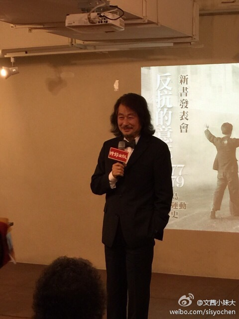
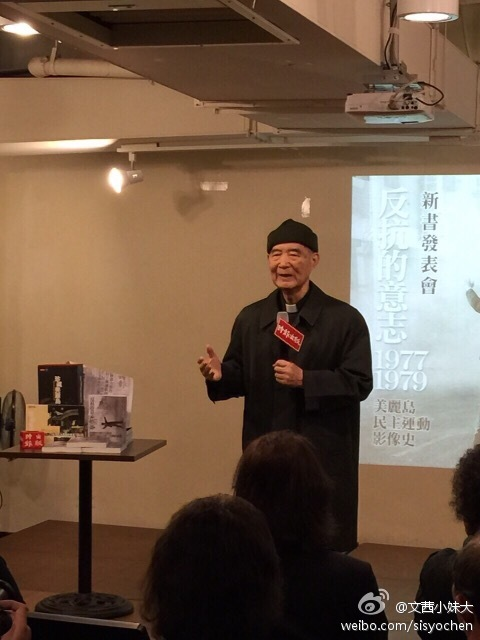
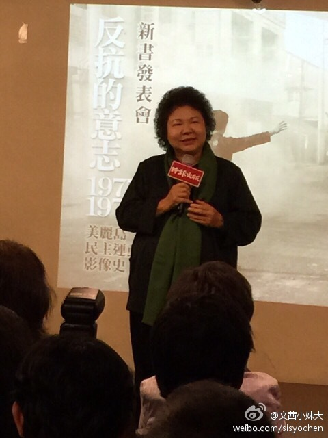
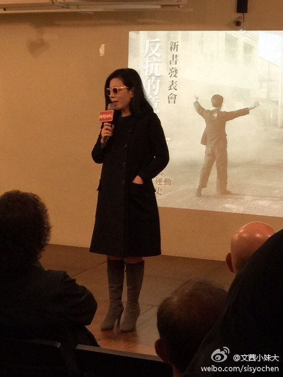
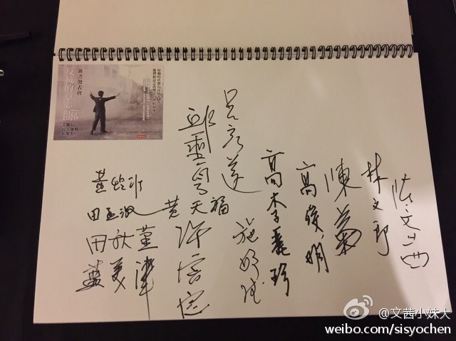
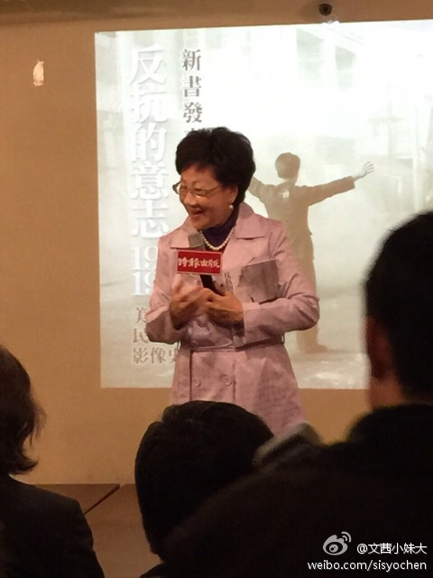
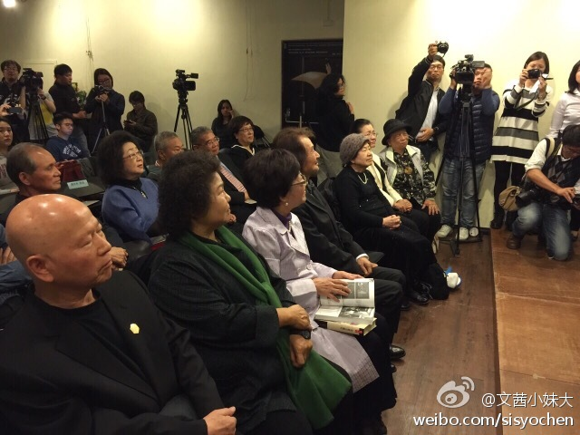
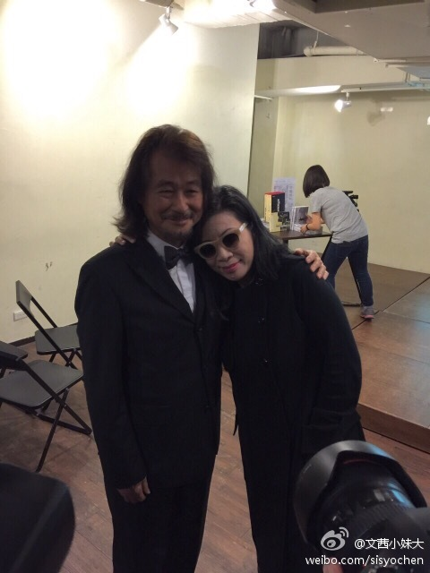
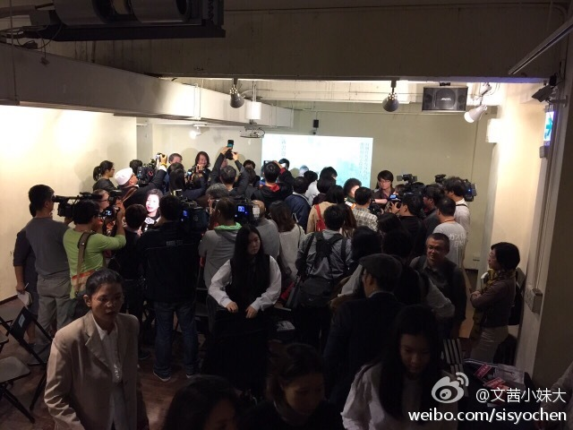

这篇文章有意思。匿名收藏家找到了哈佛大学研究早期基督教的顶尖教授Karen King，交给她几件他收藏的古代福音书的断片，包括那个著名的“…耶稣说：我妻子…”那片。它们通过了技术测试，全世界专家却基本公认为伪作，但此教授拒绝承认。 网页链接 听着有点似曾相识阿。还记得清华简吗？
当尼龙材料的衣服刚推出的时候，如此走俏以至于几小时内全部脱销。今天大概尼龙材料的衣服算是贱货了吧。是不是科技产品都是这样？出来时候酷炫，几年之后就变为贱货？想想手机、智能手机、互联网…… 美国San Mateo
Repost@文茜小妹大:台灣美麗島事件三十五周年。35年前一群不到40歳的世代，數十個成員，以「雖千萬人吾往已」的精神，打開台灣民主新頁。他們坐牢犧牲最珍貴的人生歲月，最終推倒了戒嚴高牆。當年的前輩，後來各有主張甚至相互批判⋯⋯但沒有人忘記，心中始終有個回憶，患難之情，35年後使不同意見的人，仍相聚一堂。 
 网页链接 听着有点似曾相识阿。还记得清华简吗？
网页链接 听着有点似曾相识阿。还记得清华简吗？